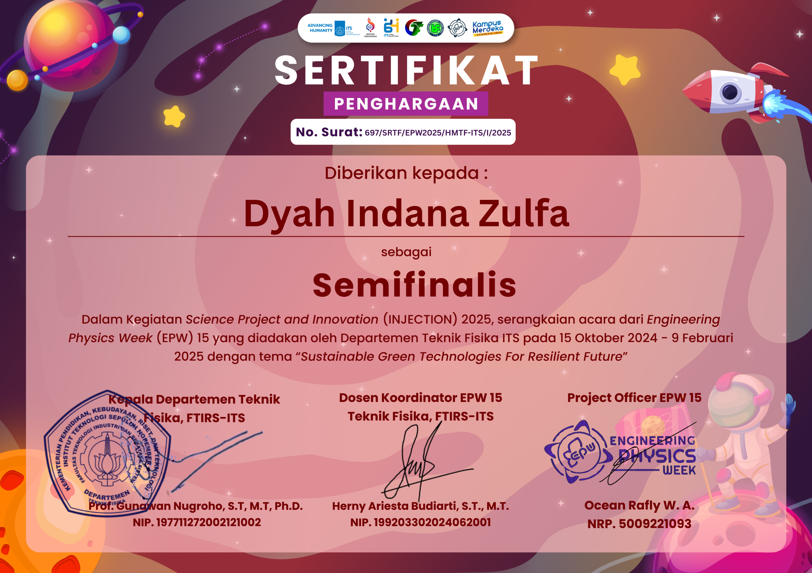

Semifinalist (Top 22 of 153 Teams) – National Scientific Paper Competition
INJECTION (Science Project and Innovation) is a national-level scientific paper competition organized as part of Engineering Physics Week (EPW) 15 by the Department of Engineering Physics, Institut Teknologi Sepuluh Nopember (ITS).
The 2025 theme was “Sustainable Green Technologies For Resilient Future.” The competition was conducted in three stages:
The competition timeline spanned from 15 October 2024 to 9 February 2025, beginning with abstract submission and culminating in an exhibition stage.
I participated in the Student Category under the subtheme IoT and Artificial Intelligence.
Our abstract successfully passed the initial selection and advanced to the Full Paper stage. After submitting the complete manuscript, our team was announced as Semifinalists (Top 22 out of 153 teams nationwide).
Although we did not advance to the final presentation stage, reaching the semifinal round in a highly competitive national event marked a significant milestone in our early research development journey.
Our scientific paper titled:
“LAMGASI: Lampu Alga Multifungsi Berbasis IoT untuk Mengatasi Polusi Udara”
proposed an IoT-integrated microalgae-based air purification system designed to mitigate urban air pollution through biological CO₂ absorption.
This research later evolved conceptually into the POIRGA Prototype, which further refined the technological implementation and system architecture.
